آموزش آنلاین کردن سایت به صورت رایگان
1.مرحله اول
2.مرحله دوم
حالا که گیت نصب شد, یک فولدر خالی ایجاد کنین.
2.مرحله سوم
حالا vscode رو باز کنین و فولدری که ساختین رو انتخاب کنید.
2.مرحله چهارم
حالا اگه دوست داشتین سایت خودتونو بسازید, یک فایل index.html ایجاد
میکنید و کد هاشو میزنید و میسازیدش, اگر هم که حوصله ندارین میتونین این
سایتی که من ساختم رو دانلود کنید و برین توی فایل index.html و اطلاعات
خودتونو بنویسین.
دانلود فایل html
2.مرحله پنجم
الان باید برین توی سایت گیت هاب ثبت نام کنین.
آموزش ثبت نام در گیت هاب
سایت Github
(فقط تا قسمتی که ثبت نام کرده و وارد گیت هاب شده رو بخونین, بقیش واجب
نیست)
2.مرحله ششم
حالا, داخل پروفایل گیت هابتون, یک رپازتوری جدید بسازین.
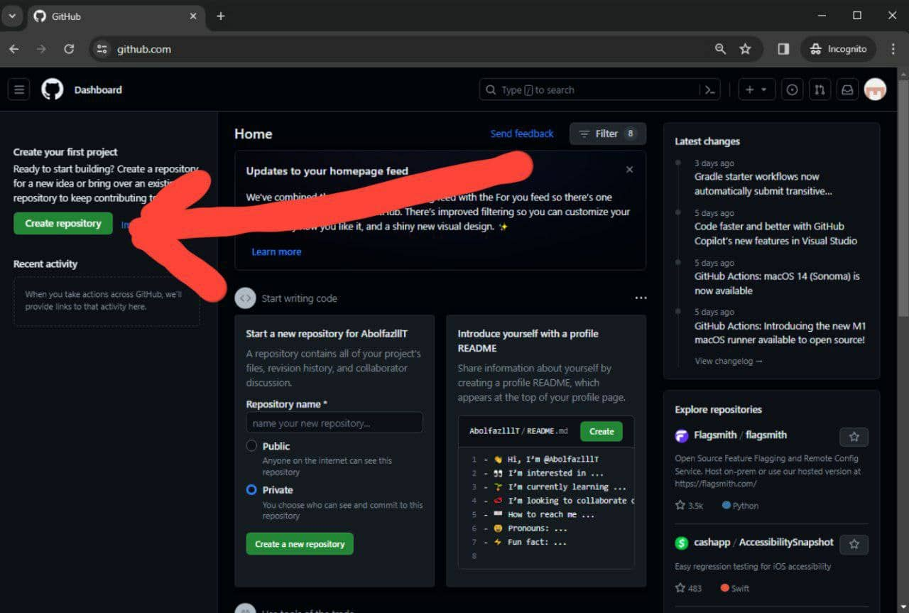
با کلیک کردن روی این دکمه.
2.مرحله هفتم
یک نام برای رپازتوریتون تعیین کنید.
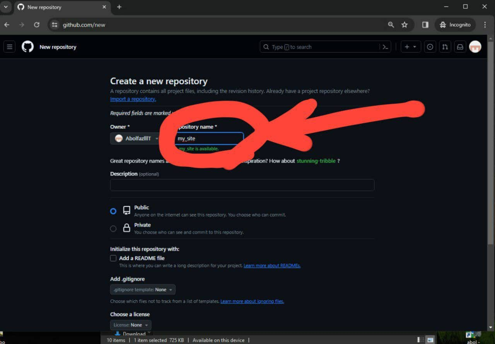
2.مرحله هشتم
رپازتوری رو ایجاد کنید.
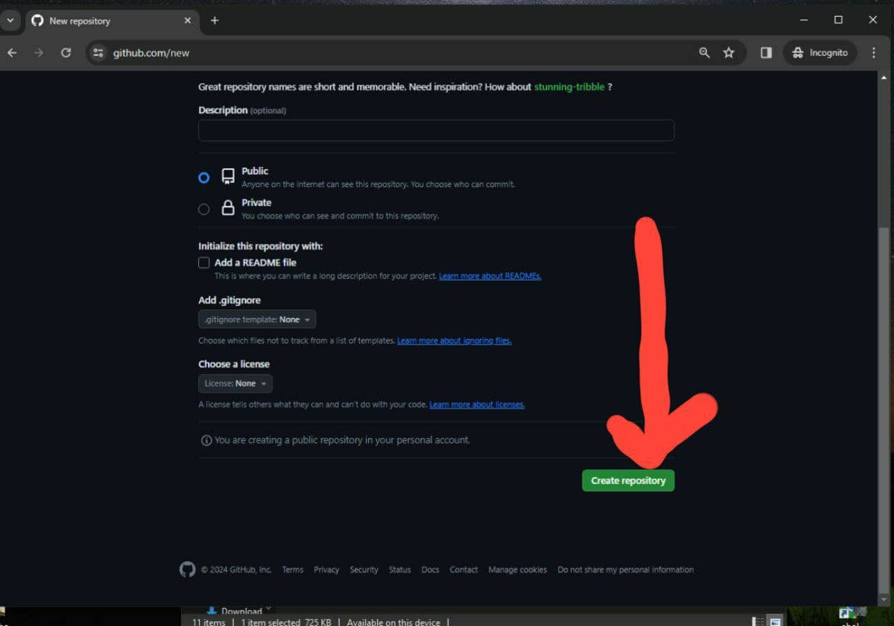
2.مرحله نهم
بعد از ساختن رپازتوری, به صفحه مخصوص رپازتوریتون ری دایرکت میشین
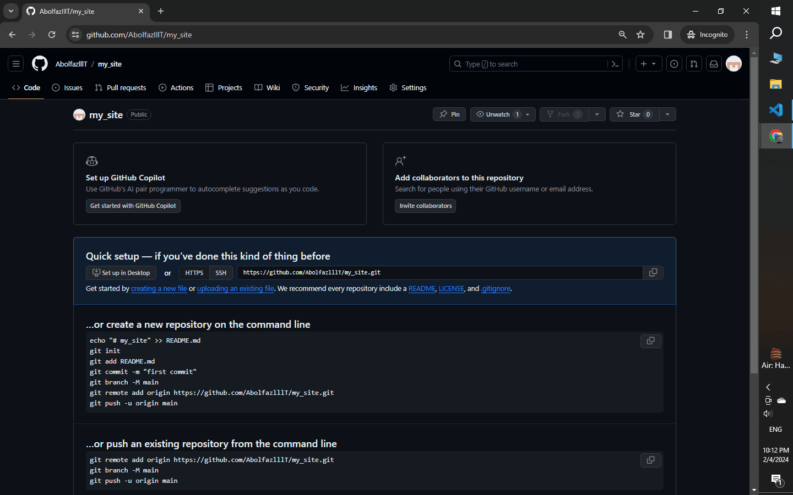
2.مرحله دهم
حالا دوباره به vscode برمی گردین و از نوار بالا, گزینه View و سپس
Terminal رو میزنین.
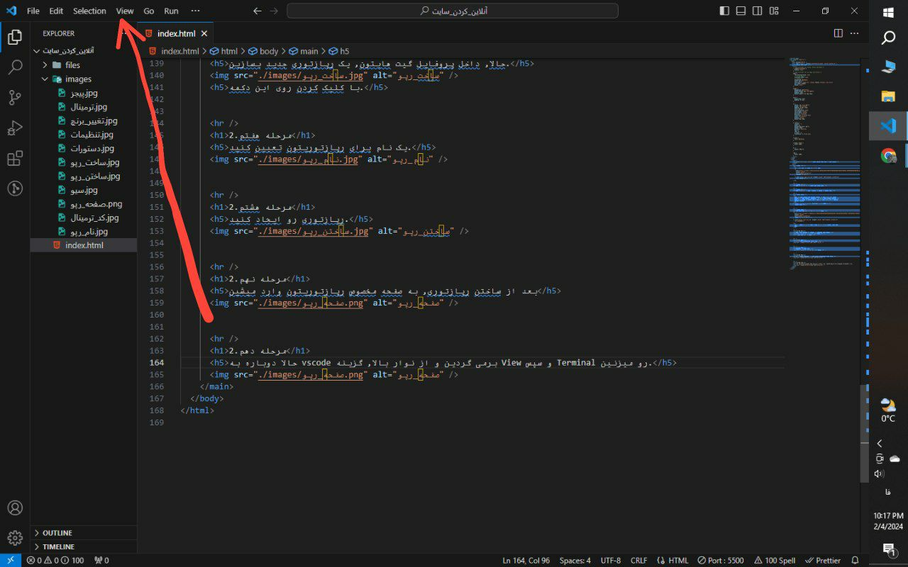
2.مرحله یازدهم
حالا باید یه همچین قسمتی براتون باز بشه.
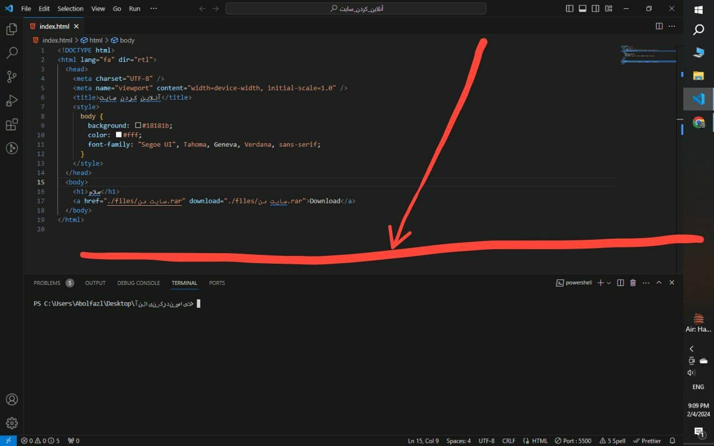
2.مرحله دوازدهم
حالا باید به ترتیب این دستورات رو اجرا کنید.
1_ git init
2_ git add .
3_ git commit -m 'first commit'
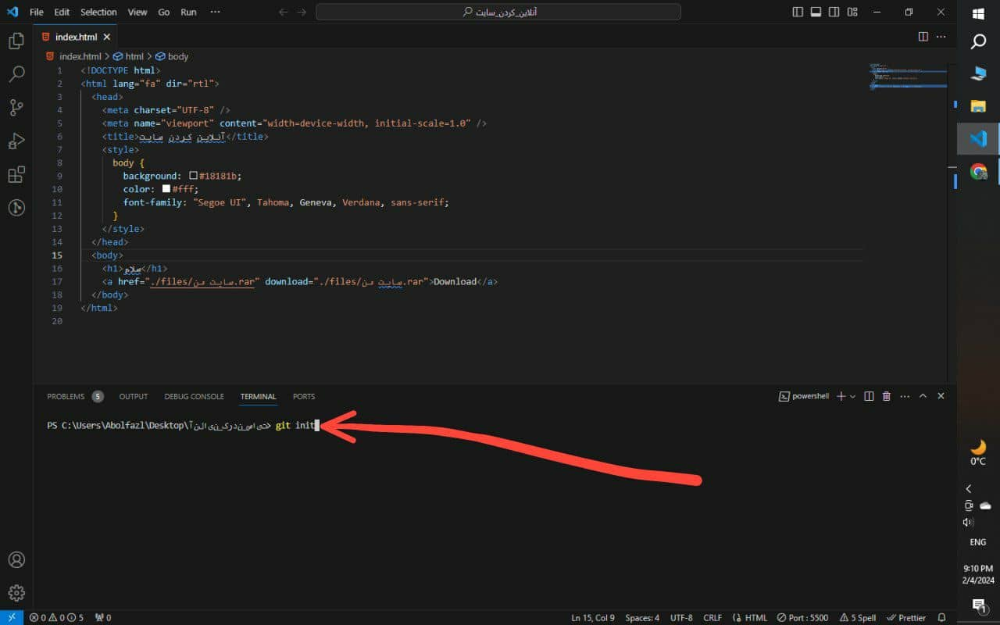
به اینصورت
2.مرحله سیزدهم
دوباره برگردین به گیت هاب و صفحه رپازتوری که ساختین و کد هایی که در
تصویر مشخص شده رو هم دونه به دونه کپی کنین و توی ترمینال وارد کنید.
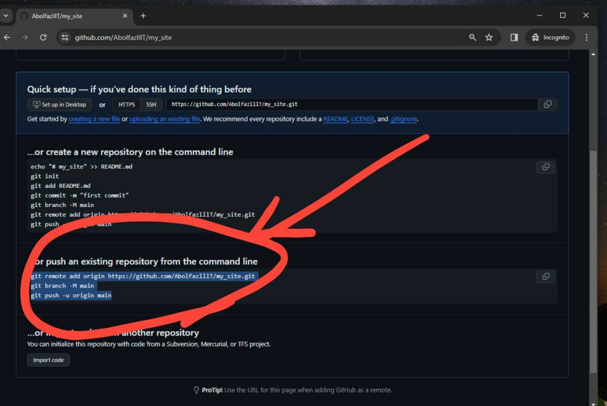
2.مرحله چهاردهم
حالا به گیت هاب برگردید و صفحه رو رفرش کنید. دیگه نباید با اون صفحه اول
یا همون دستورات مواجه باشیم, باید یک صفحه مثل عکس پایین برامون ایجاد شده
باشه.
اگه اینطور بود, گزینه setting که در عکس مشخص شده رو کلیک کنید.

2.مرحله پانزدهم
وارد این صفحه که شدید, از نوار سمت چپ, گزینه pages که مشخص شده رو انتخاب
میکنیم.
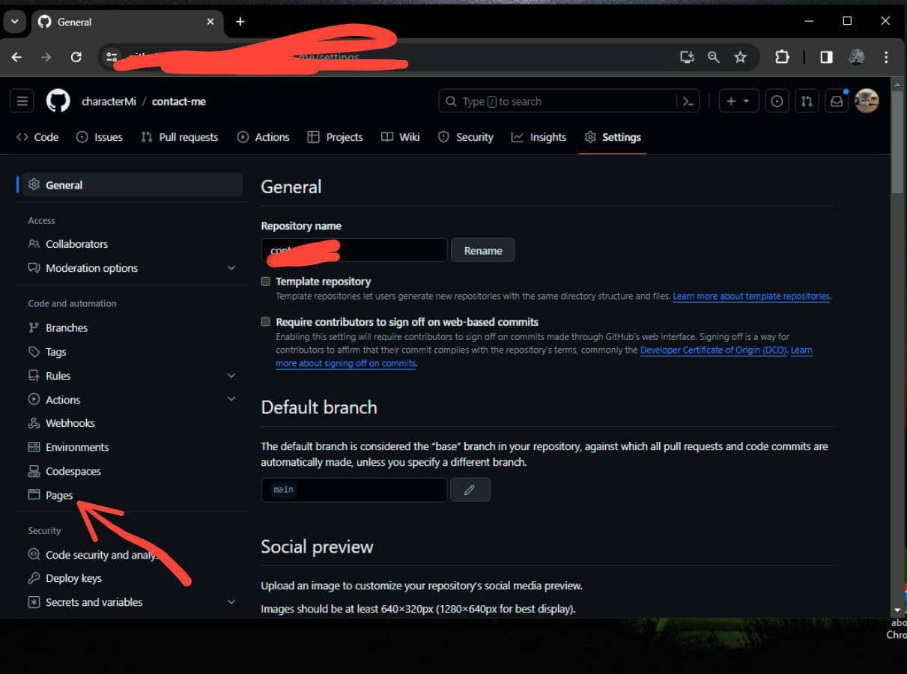
2.مرحله شونزدهم
حالا, وقتی به این صفحه منتقل شدین, از قسمت مشخص شده, گزینه main رو
انتخاب میکنید.
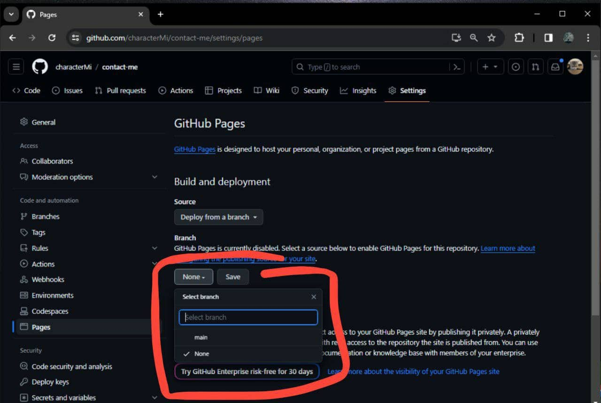
2.مرحله هفدهم
وقتی که main رو انتخاب کردین, save رو بزنین و تمام.
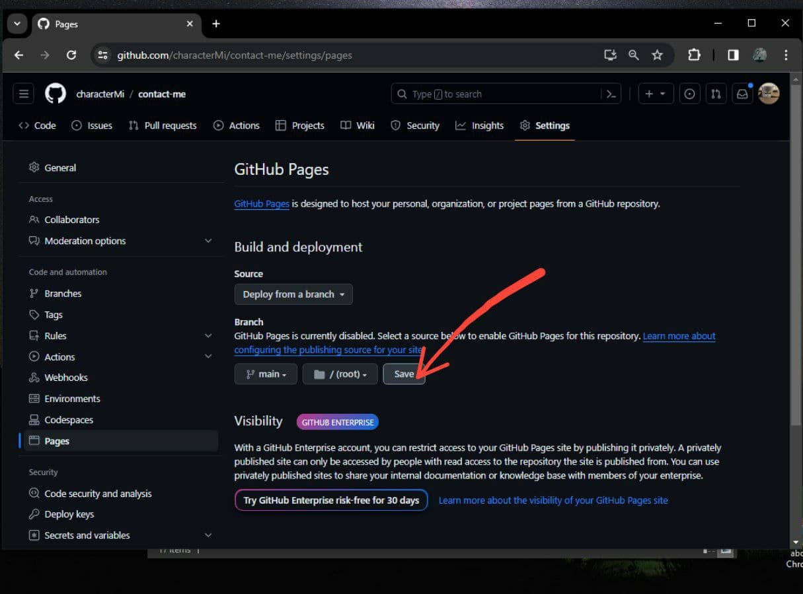
کار جَمعه.
حالا چند ثانیه و یا دقیقه مهلت بدین تا سایت کامل اوکی بشه.
خب دیگه, حالا اگه برین به این آدرس میتونین سایتتون رو آنلاین ببینین.
https://نام-کاربری-گیت-هاب.github.io/نام-رپازتوری
- مشکلی تو پروسه دیپلوی کردن براتون پیش اومد بهم پیام بدین 👇🏼
TELEGRAM